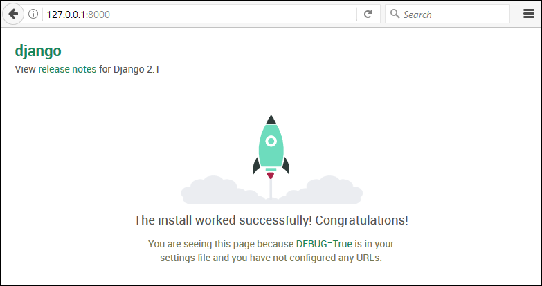

Introduction to Django
When it comes to web development back-ends, there are many alternatives, from PHP, Java and C# to GoLang and Ruby. Python also has many options to implement a powerful web application service. One of the most used web frameworks is Django.
Django provides a full featured web development framework, and automated tools for a straightforward development.
If you have installed python in your system, you only need to run the Django package installation using pip:
> pip install Django
Create the Base Django Web Application
Django comes with a command line tool to create Django projects from scratch. The main command is django-admin.
> django-admin startproject webapp
This command will create a new web application folder named webapp.
In the base folder there is a file created with name manage.py. This file is the project management script for your application.
> python manage.py [command]
There are many commands available for the project management (the most used are in bold letters). You can see all options, when you runpython manage.py(without additional parameters):
Run the application for the first time
After creating the Django project, you can run the default application with no additional coding. Run the command runserver.
> python manage.py runserver
This will start a local webserver at http://localhost:8000/
Creating an App inside your project
You have created a main Django project (webapp). Now, you can create an application inside your project. Each application is like a separated application module within the same project. The command to create a new application is:
> python manage.py startapp {appname}
Where {appname} is the application name (python manage.py startapp example). When you execute this command, a new folder (example) is created along with the project folder (webapp)
Creating Views
Actually, you have only an initial home page and the admin/ interface. You can create your own initial page, adding a view and creating a route.
Edit the View file views.py inside your web application folder (example/views.pyin this example) to manage requests for an index page:
from django.shortcuts import render
from django.http import HttpResponse
def index(request):
return HttpResponse("Hello World")
This code uses the HttpResponse function to output a "Hello world" message to the browser client. The render function will be used in the next section.
Now, create a new Route inside the urls.py file of the project folder (webapp/urls.py), to direct request for the root site to your index() function.
from example import views
urlpatterns = [
path('admin/', admin.site.urls),
path('', views.index)
]
The first line imports the views.py from the current application folder (example), as views object in the current context.
Then, you can specify a new route path ‘’ (root path) in urlpatterns, mapped to respond with the result of views.index (views.py, function index())
Now, when you run your server (python manage.py runserver) you can view your new home page in http://localhost:8000/
http://localhost:8000/
Hello World
Conclusion
In this post we created a Python web application with Django following this commands:
Create the main web server project and start running the service:
- Run django-admin startproject webapp
- Execute cd webapp to change to the project folder
- Run python manage.py migrate
- Finally, run python manage.py runserver
Create an application inside the project:
- Run python manage.py startapp example to create the application folder
- Edit the file example/views.py to create an index() function
- Add in webapp/urls.py a new route path in urlpatterns
- Modify webapp/settings.py to add the application